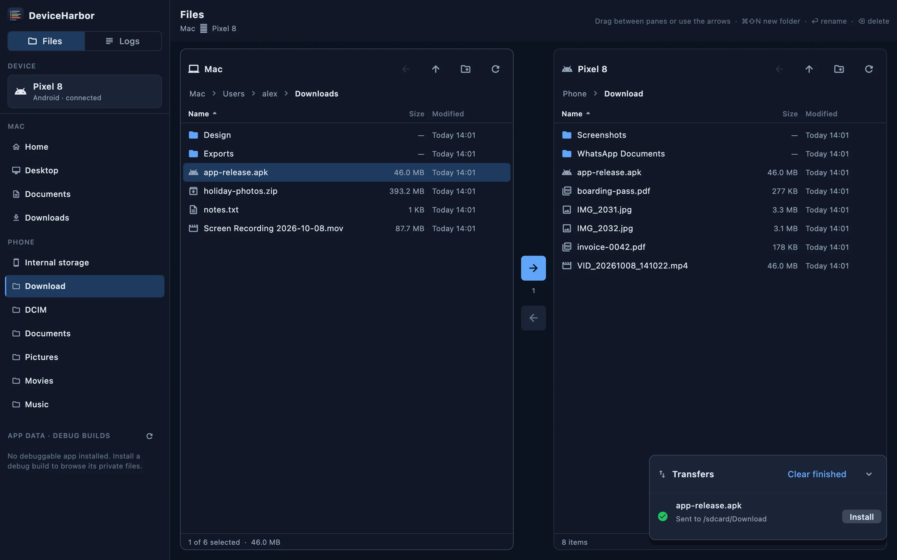
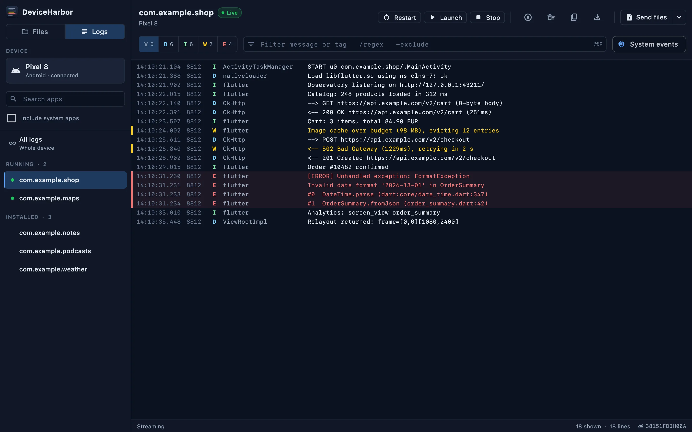
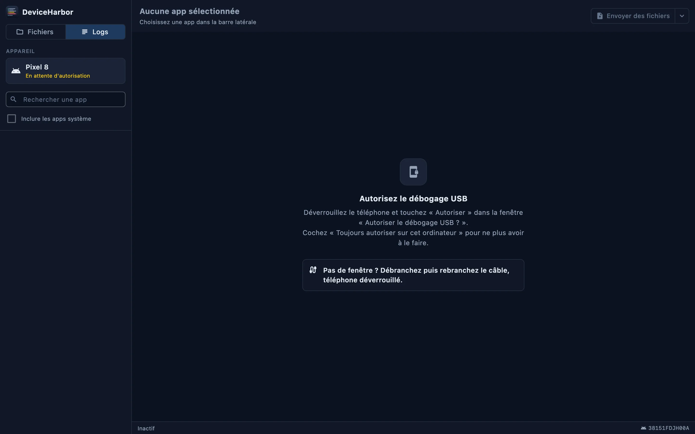

Plug in an Android phone or an iPhone. Copy files both ways, install APKs, and read each app's logs live — no terminal, no Android File Transfer. Branchez un téléphone Android ou un iPhone. Copiez des fichiers dans les deux sens, installez des APK et lisez les logs de chaque app en direct — sans terminal, sans Android File Transfer.
Download for Mac Télécharger pour Mac
One window, the phone is detected as soon as it is plugged in. Une seule fenêtre, le téléphone est détecté dès qu'il est branché.
The Mac on the left, the phone on the right. Drag files and folders either way, rename, create folders, delete. Le Mac à gauche, le téléphone à droite. Glissez fichiers et dossiers dans les deux sens, renommez, créez des dossiers, supprimez.
Drop files anywhere on the window to send them to Download; an APK installs in one click, with Android's real error if it fails. Déposez des fichiers n'importe où sur la fenêtre pour les envoyer dans Download ; un APK s'installe en un clic, avec la vraie erreur d'Android en cas d'échec.
Pick an app and read its logs live, even across restarts. Filter by level or text, see errors at a glance, copy or save. Choisissez une app et lisez ses logs en direct, même après un redémarrage. Filtrez par niveau ou par texte, repérez les erreurs d'un coup d'œil, copiez ou enregistrez.
Logs, launch and stop on both. Files and APKs on Android, where Android File Transfer keeps failing. Logs, lancement et arrêt sur les deux. Fichiers et APK sur Android, là où Android File Transfer plante sans arrêt.
Open the private folder of your own debug apps: preferences, databases, cache. Ouvrez le dossier privé de vos apps en debug : préférences, bases de données, cache.
The Android tools come inside the app. No SDK, no Homebrew, no command line. Les outils Android sont inclus dans l'app. Pas de SDK, pas de Homebrew, pas de ligne de commande.

The app is free and not notarized by Apple, which is why macOS asks for confirmation the first time. L'app est gratuite et n'est pas validée par Apple, d'où la confirmation demandée par macOS la première fois.
iPhone: install the free libimobiledevice tools once with brew install libimobiledevice ideviceinstaller, then plug in, unlock and tap “Trust”.
iPhone : installez une fois les outils gratuits libimobiledevice avec brew install libimobiledevice ideviceinstaller, puis branchez, déverrouillez et touchez « Se fier ».
